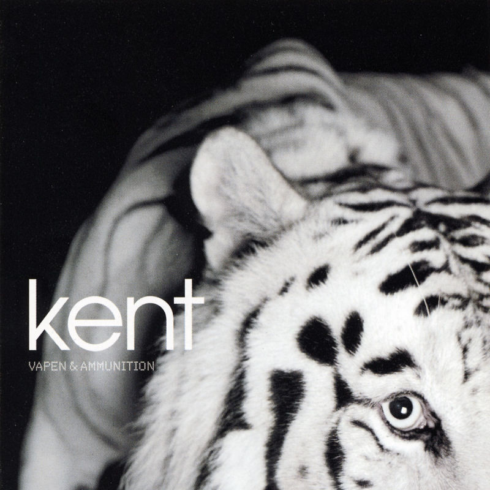
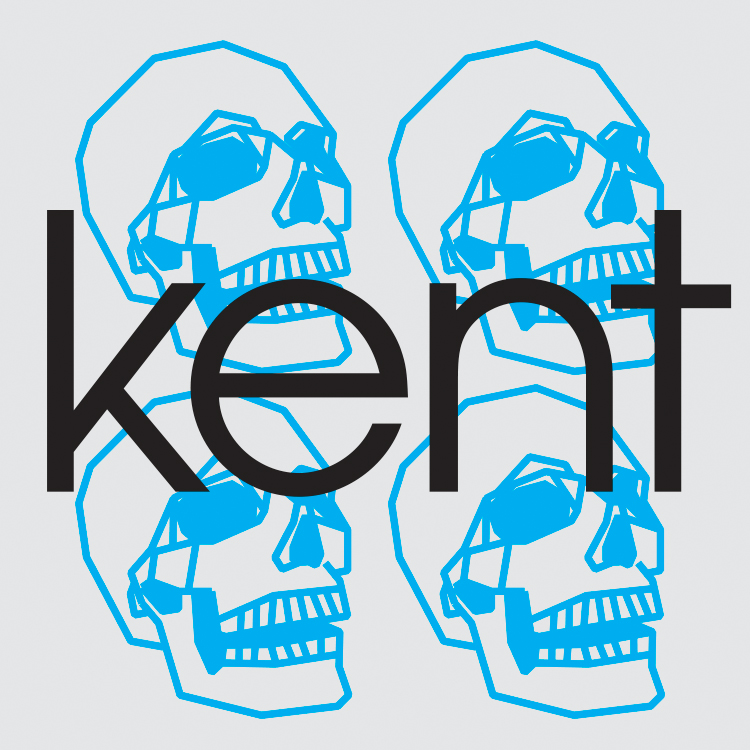

Vapen och Ammunition
Released April 2002
Musicians:
- Kent, Vocals, Guitar, bass
- Zed, Production, Recording, Mixing
- Björn Engelmann, Mastering
Vapen & ammunition (Swedish for Weapons & Ammunition) is the fifth studio album by Swedish alternative rock band Kent. It was released on 15 April 2002 through RCA Records and BMG. Absent from this album is a long, mostly-instrumental song, rounding the album off, as had been a characteristic of the band ever since their second record Verkligen. The white tiger on the cover is a tribute to the band's hometown Eskilstuna: the zoo in town had white tigers as its main attraction.


Side One
- Sundance Kid
- Pärlor (Pearls)
- Dom andra (The Others)
- Hur jag fick dig att älska mig" (How I Made You Love Me)
- Kärleken väntar (Love Is Waiting)
Side Two
- Socker (Sugar)
- FF
- Elite
- Sverige (Sweden)
- Vapen & ammunition was voted Best Album of 2002 on the Grammis awards, the Swedish equivalent to the Grammy.
- The budget for the recordings was rather limited so Chas Chandler (producer) and Hendrix completed much of the album's pre-production work at their shared apartment.
- White Tiger from "Parken Zoo" in Kent's hometown Eskiltuna
- It is the best-selling album by Kent, having sold over 600,000 copies worldwide as of 2007.